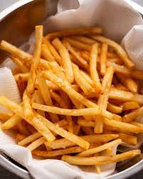

Finally, here it is – The perfect french fries recipe! Based on a ground-breaking method from the legendary Kenji López-Alt’s The Food Lab, these hot chips are so crispy they stay that way even after they’ve gone cold. It’s rare to find fries this good even at up-market bistros!